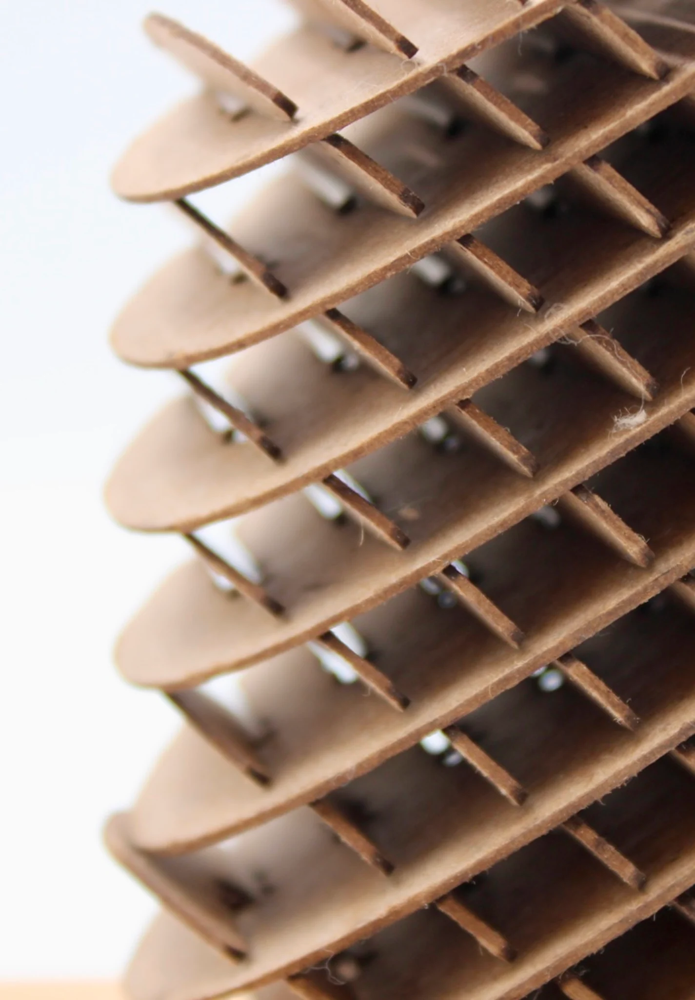
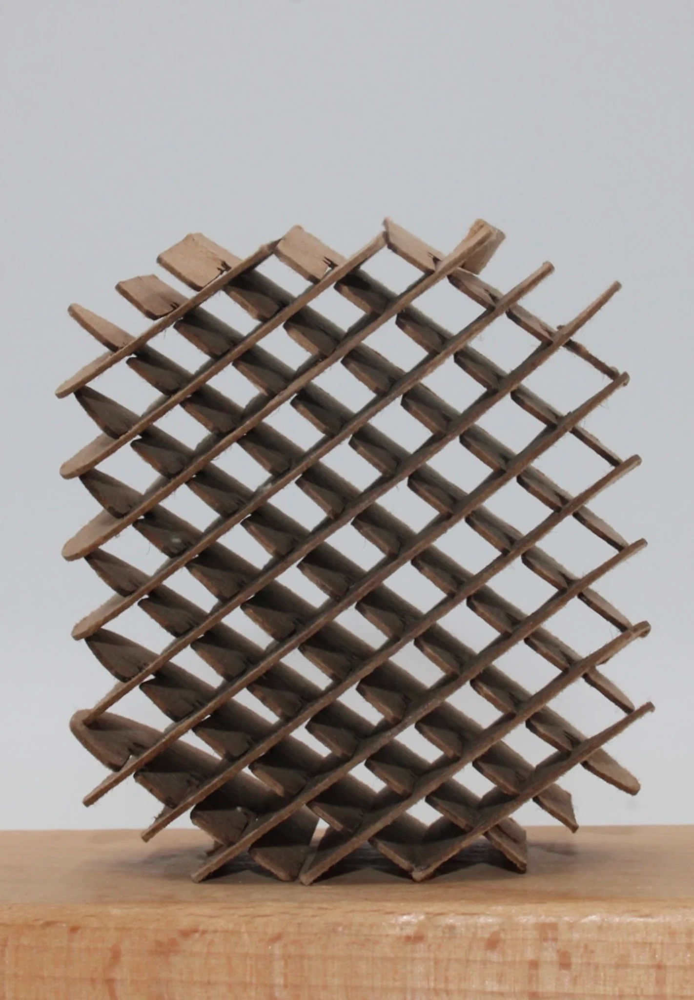
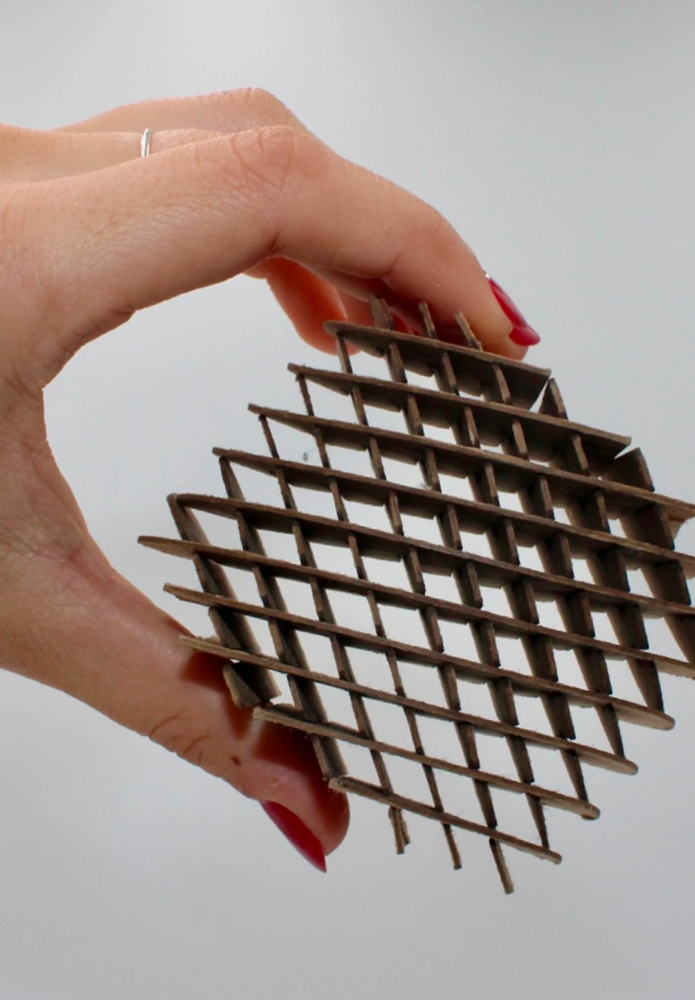
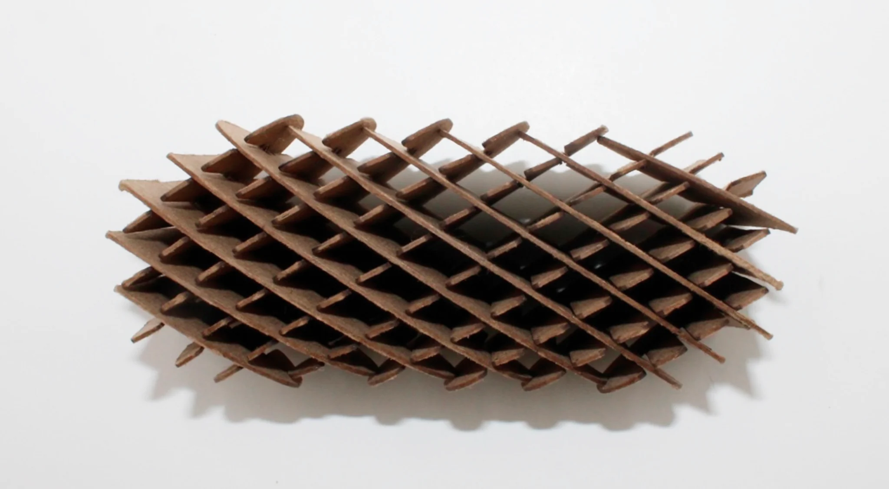
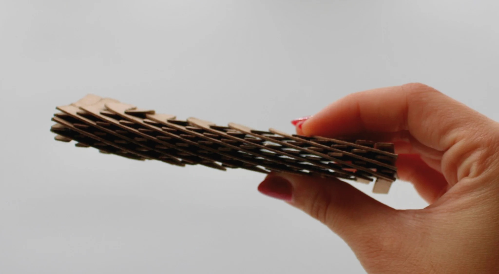
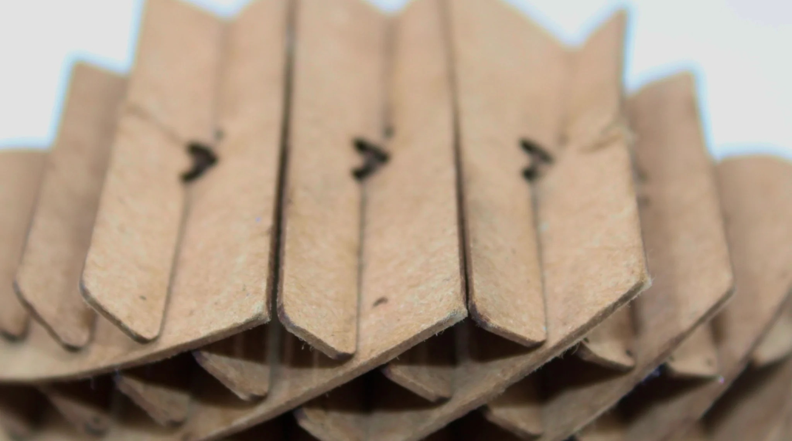
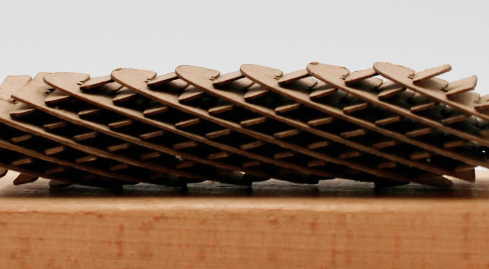

CHIPBOARD MORF
2025



BUILT TO MOVE
Inspired by the Morf fidget toy, this handmade replica explores how a flexible, interactive structure can be recreated using chipboard. Its interlocking pieces expand, compress, and shift together, transforming a simple material into a tactile object designed for movement.
The project experiments with structure, repetition, and the relationship between material and motion.

DETAILS
MATERIALS
Chipboard
DIMENSIONS
5 in x 3 in x 2 in


